Giới thiệu
Văn Hóa Tết Quảng Bình
Giới thiệu
Văn Hóa Tết Quảng Bình
|| giới thiệu
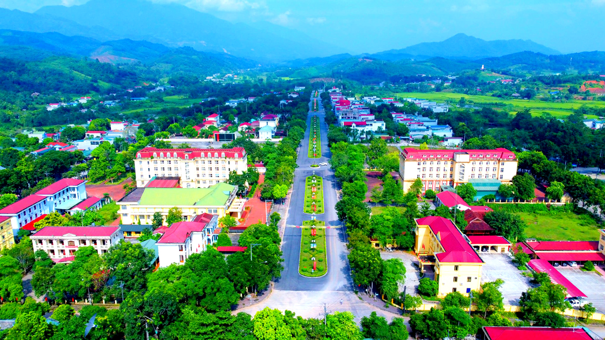
📌 Quảng Bình là một tỉnh thuộc khu vực Bắc Trung Bộ, nằm ở dải đất hẹp nhất Việt Nam. Phía Bắc giáp Hà Tĩnh, phía Nam giáp Quảng Trị, phía Tây giáp Lào và phía Đông giáp Biển Đông. Trung tâm tỉnh là thành phố Đồng Hới – một thành phố biển yên bình và đang ngày càng phát triển. Quảng Bình nổi tiếng với thiên nhiên hùng vĩ và hoang sơ, đặc biệt là Di sản Thiên nhiên Thế giới Phong Nha – Kẻ Bàng với hệ thống hang động kỳ vĩ. Bên cạnh đó là những bãi biển dài cát trắng, những cánh đồng lúa trải rộng và các làng quê thanh bình nép mình bên dòng sông. Con người Quảng Bình mang đậm nét tính cách miền Trung: cần cù, chịu thương chịu khó và giàu tình nghĩa. Dù cuộc sống còn nhiều vất vả do thiên tai, bão lũ, nhưng người dân nơi đây luôn đoàn kết, lạc quan và giữ gìn truyền thống gia đình.
📌 Tết ở Quảng Bình có nét riêng so với nhiều nơi khác. Nếu ở miền Nam thường rực rỡ sắc mai vàng, miền Bắc đậm sắc đào hồng, thì Quảng Bình – nằm giữa hai miền – thường có cả đào lẫn mai. Không khí Tết không quá ồn ào mà thiên về sự sum vầy, đầm ấm. Người dân chú trọng việc thờ cúng tổ tiên và giữ gìn phong tục truyền thống hơn là hình thức bên ngoài. Ngoài ra, do thời tiết thường se lạnh vào dịp Tết, nên khung cảnh làng quê những ngày đầu xuân mang một vẻ đẹp trầm lắng, mộc mạc. Khói bếp chiều cuối năm, mùi bánh chưng đang luộc, tiếng nói cười của gia đình sum họp – tất cả tạo nên một cái Tết rất riêng, rất Quảng Bình.
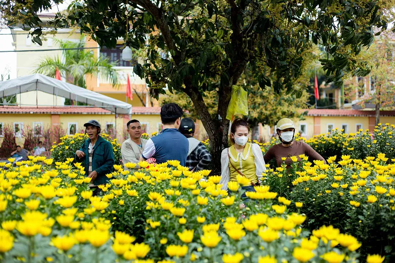
|| phong tục-nghi lễ
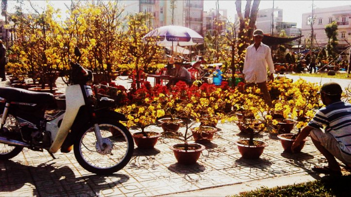
🧹 Trước Tết:
Những ngày cuối năm, mỗi gia đình đều dọn dẹp nhà cửa sạch
sẽ,
lau chùi bàn thờ tổ
tiên để chuẩn bị đón năm mới.
Ngày 23 tháng Chạp, người dân làm lễ cúng ông Công ông Táo, tiễn Táo quân về trời báo cáo việc trong năm.
Một trong những hình ảnh đẹp nhất là cảnh cả gia đình cùng nhau gói bánh chưng, bánh tét. Nồi bánh đỏ lửa
suốt đêm không chỉ để nấu bánh mà còn để giữ hơi ấm sum họp.
Ở nhiều vùng quê, người dân còn dựng cây nêu trước sân như một cách xua đuổi tà ma và chào đón điều may mắn.
🧧 Trong Tết:
Đêm giao thừa là khoảnh khắc thiêng liêng nhất. Gia đình làm
lễ
cúng trời đất và tổ tiên, cầu mong năm mới bình an, thuận lợi.
Sáng mùng Một, con cháu chúc Tết ông bà cha mẹ, nhận lì xì đỏ thắm như lời chúc may mắn đầu năm. Người dân
thường đi chùa cầu an, xin lộc đầu xuân và gửi gắm những ước nguyện tốt đẹp.
Điểm đặc biệt ở Quảng Bình là cách cúng giản dị nhưng trang trọng, giữ nguyên bài khấn truyền thống từ đời
trước truyền lại.
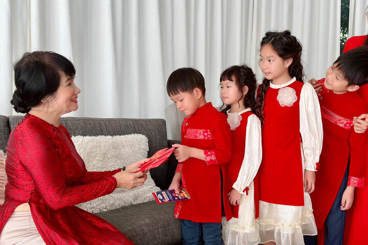
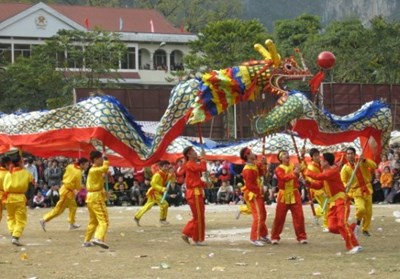
🎭 Sau Tết:
Sau những ngày vui xuân, gia đình làm lễ hóa vàng để tiễn ông
bà
tổ tiên.
Một số địa phương tổ chức hội làng đầu xuân với nhiều hoạt động văn nghệ, thể thao và trò chơi dân gian, tạo
nên không khí rộn ràng khắp thôn xóm.
|| ẩm thực
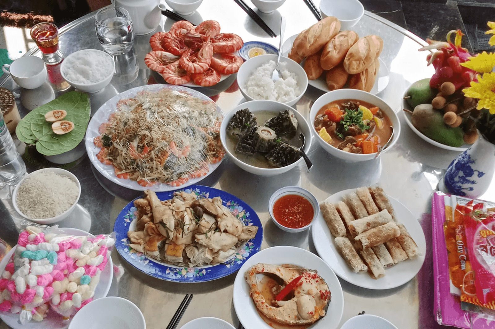
📣 Ẩm thực Tết ở Quảng Bình mang đậm hương vị miền Trung – đậm đà, giản dị nhưng đầy ý nghĩa.
🥮 Bánh truyền thống:
Bánh chưng / bánh tét – tượng trưng cho đất trời và
lòng
biết ơn tổ tiên.
Bánh thuẫn – màu vàng rực rỡ, biểu tượng cho sự đủ đầy, sung túc.
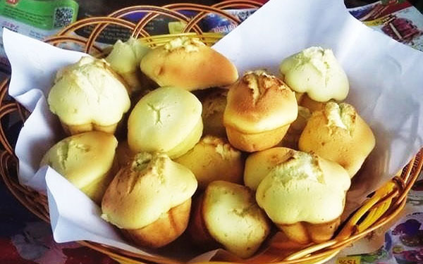
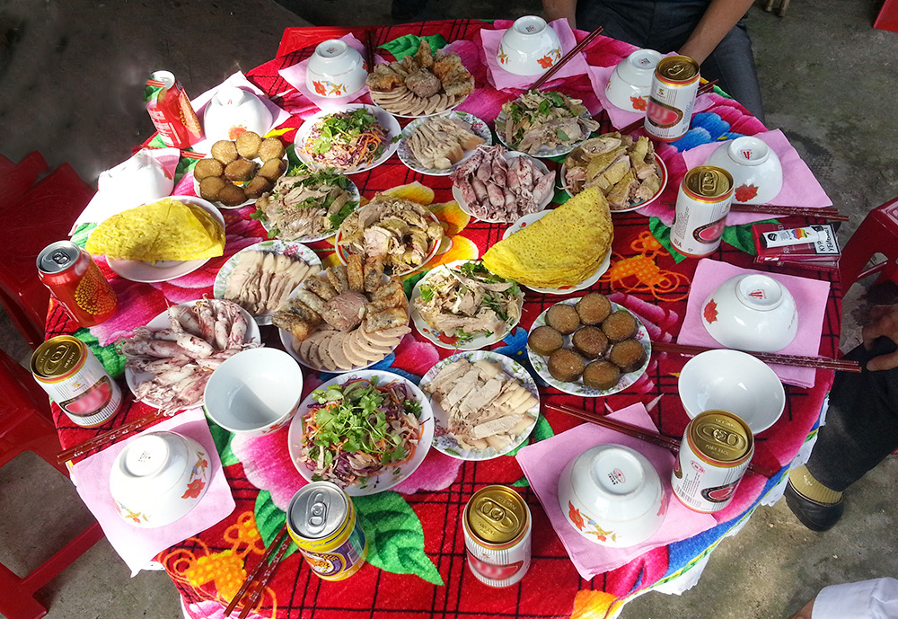
🍰 Món mặn – món ngọt:
Thịt heo kho, dưa món, nem chua, mứt gừng cay nồng.
Do thời tiết thường lạnh vào dịp đầu năm, các món ăn thường có vị đậm và hơi cay để tạo cảm giác ấm áp. Mâm
cỗ Tết tuy không quá cầu kỳ nhưng luôn đủ đầy và chan chứa tình cảm gia đình.
|| văn hóa-sinh hoạt
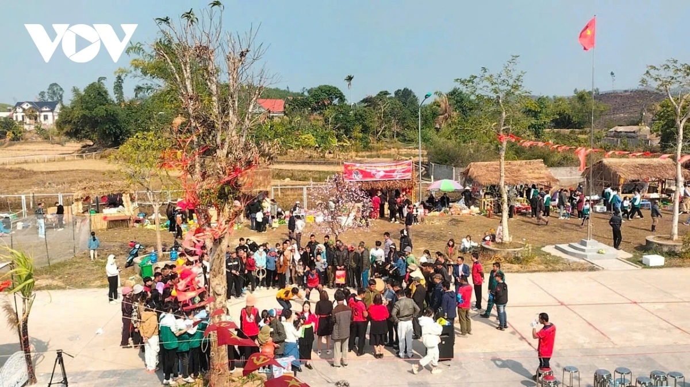
🚩 Tết ở làng quê Quảng Bình không ồn ào nhưng rất ấm áp. Trẻ em mặc quần áo mới, nô đùa khắp xóm. Người lớn sang nhà nhau chúc Tết, hỏi thăm và chúc một năm làm ăn thuận lợi.
🚣 Các trò chơi dân gian như kéo co, cờ người, đánh đu thường được tổ chức tại sân đình hoặc nhà văn hóa thôn. Chợ Tết rộn ràng với hoa, bánh trái và tiếng cười nói vang khắp con đường quê.
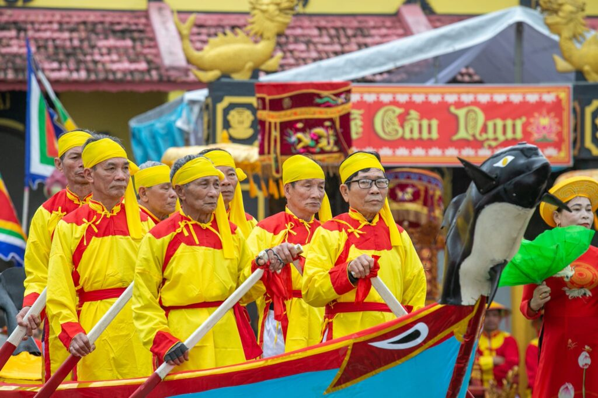
|| hình ảnh-video
📌 Tết xưa là hình ảnh mái nhà tranh, bếp củi, nồi bánh chưng nghi ngút khói.
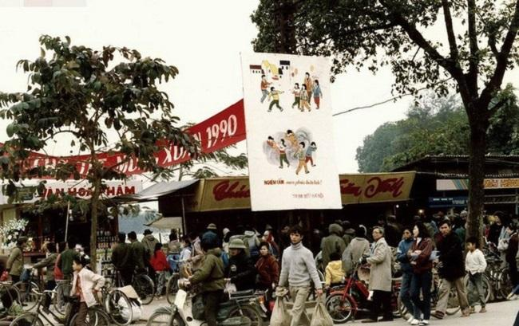
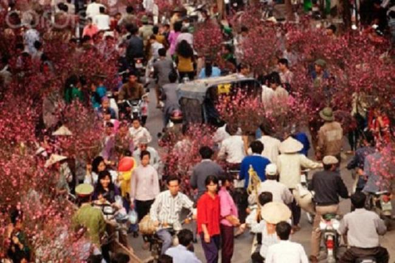
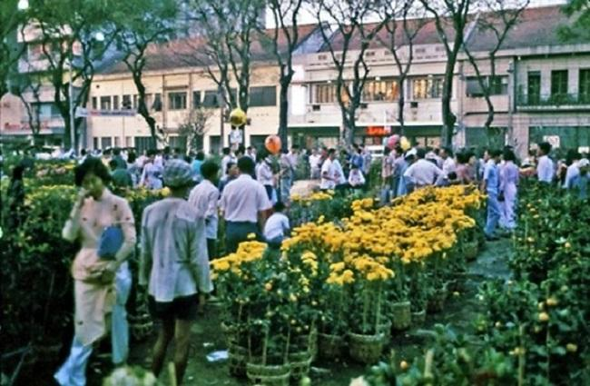
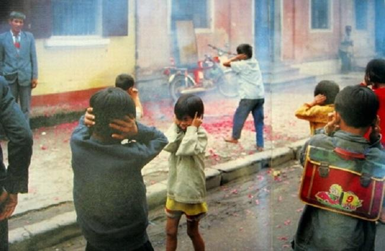
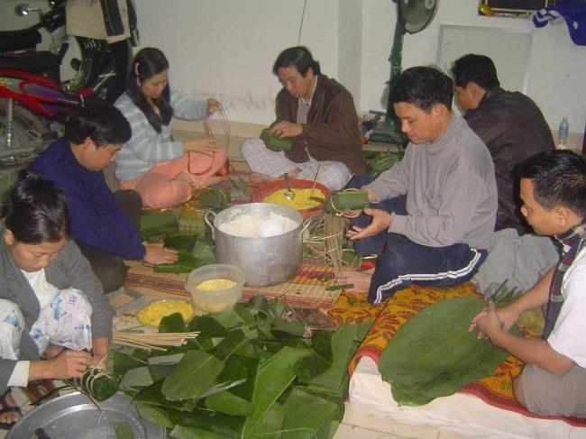
📌 Tết nay có thêm ánh đèn rực rỡ, phố xá khang trang hơn nhưng vẫn giữ được nét truyền thống.
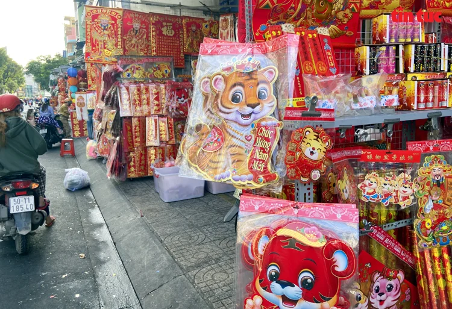
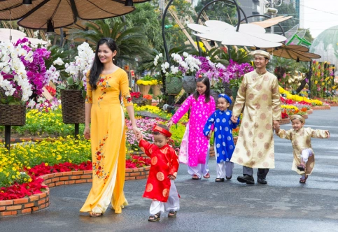
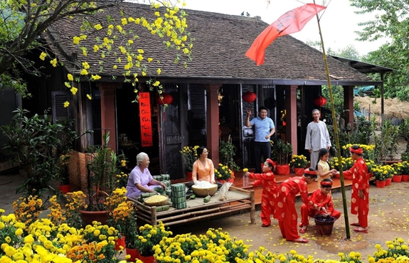
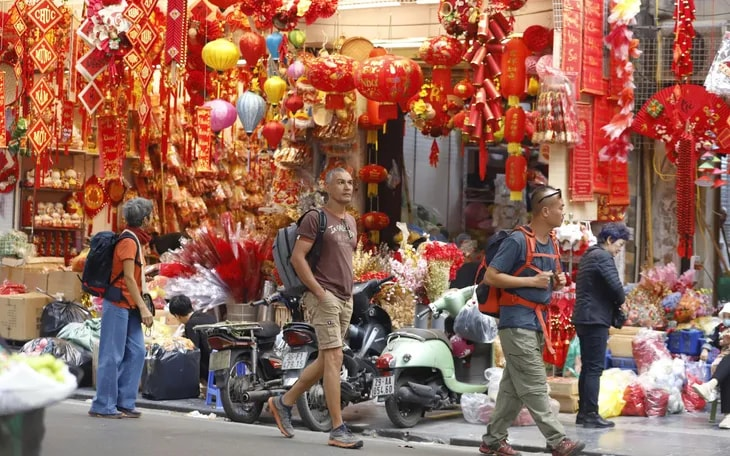
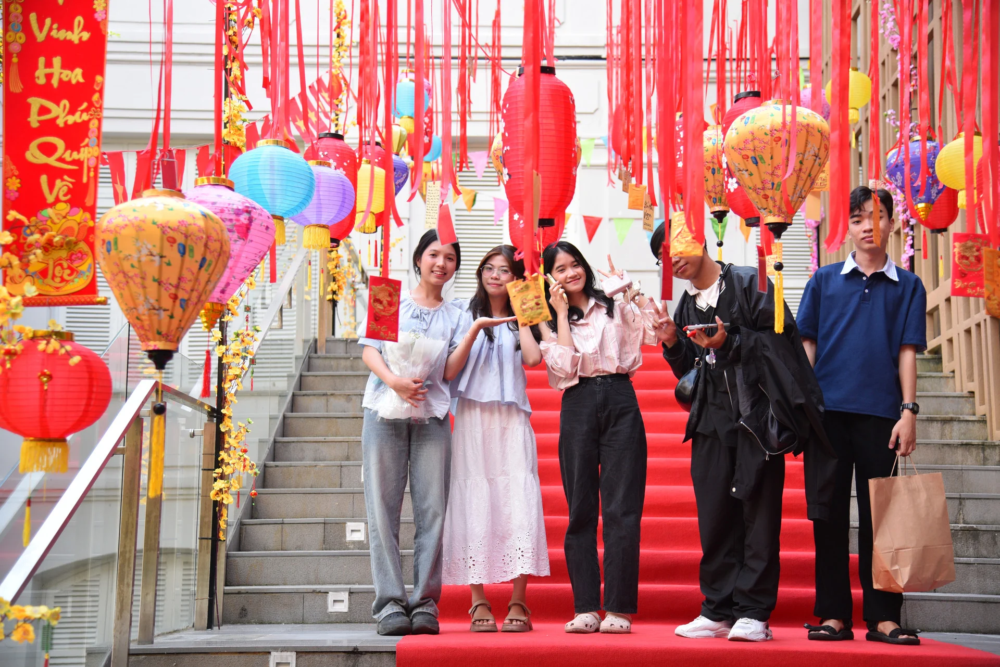
📌 Những thước phim ghi lại cảnh gói bánh, chợ Tết và khoảnh khắc giao thừa luôn mang lại cảm xúc đặc biệt cho mọi người.
|| Câu chuyện tết xưa
🌾 Lời kể của ông bà:
Ông tôi thường kể rằng, Tết ở Quảng Bình ngày xưa không đủ đầy như bây giờ, nhưng lại ấm áp hơn rất nhiều.
Ông nói hồi đó còn nghèo lắm. Cả năm chỉ mong đến Tết để được ăn một bữa cơm “ra hồn”. Thịt heo không phải
lúc nào cũng có, nên nhà nào nuôi được con heo đến cuối năm là quý lắm. Đến ngày 28, 29 tháng Chạp, cả xóm
mới rộn ràng tiếng người mổ heo, chia thịt. Trẻ con đứng quanh chỉ mong được miếng da giòn hay khúc xương để
gặm.
Bà tôi thì nhớ nhất là đêm nấu bánh chưng. Cả gia đình ngồi quanh bếp lửa, ngoài trời gió mùa đông bắc thổi
lạnh buốt. Khói bếp cay mắt nhưng ai cũng cười nói vui vẻ. Người lớn thay phiên nhau canh nồi bánh, trẻ con
thì cố thức thật khuya để nghe chuyện cổ tích. Bà bảo, ngày đó không có tivi, không có điện sáng rực như bây
giờ, chỉ có ánh lửa bập bùng và tiếng củi nổ tí tách. Nhưng chính ánh lửa ấy làm cho Tết trở nên ấm áp hơn
bao giờ hết.
Ông kể, sáng mùng Một, cả nhà mặc bộ quần áo đẹp nhất – dù chỉ là bộ đồ mới may bằng vải thô – rồi theo cha
mẹ đi chúc Tết họ hàng. Đường làng khi ấy chỉ là lối đất nhỏ, hai bên là ruộng đồng còn đọng sương sớm. Gặp
ai cũng chắp tay chào nhau, gửi lời chúc năm mới bình an. Không có nhiều lì xì, đôi khi chỉ là vài đồng tiền
lẻ gói trong giấy đỏ, nhưng niềm vui thì trọn vẹn.
Ông bà bảo, cái Tết ngày xưa quý ở chỗ con người gần nhau hơn. Không điện thoại, không mạng xã hội, nên mỗi
lời chúc đều được nói trực tiếp, mỗi cái bắt tay đều thật chặt. Dù thiếu thốn vật chất, nhưng tình cảm gia
đình và xóm làng thì chưa bao giờ vơi.
Mỗi lần nghe ông bà kể chuyện Tết xưa, tôi lại hiểu rằng Tết không nằm ở mâm cao cỗ đầy hay quần áo đắt
tiền. Tết nằm trong ánh mắt chờ mong, trong bếp lửa hồng, trong tiếng cười sum họp và trong ký ức không bao
giờ phai của mỗi người con quê hương.